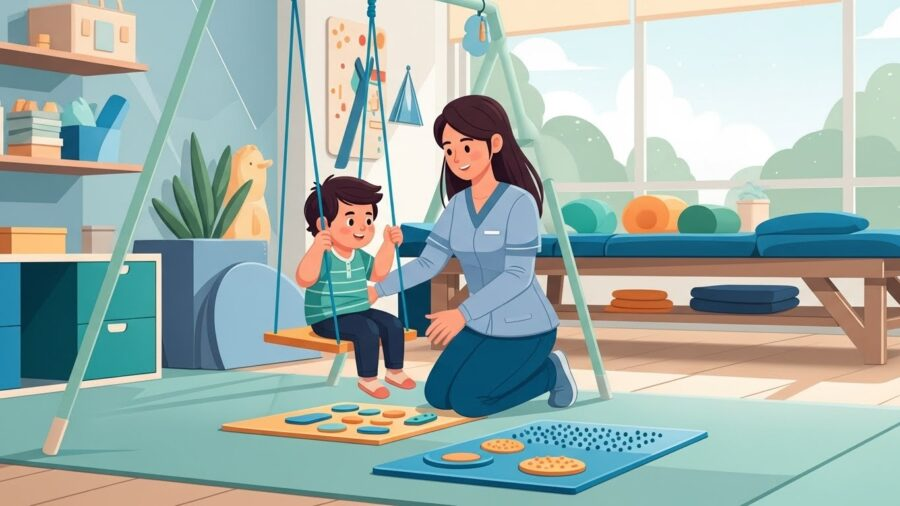
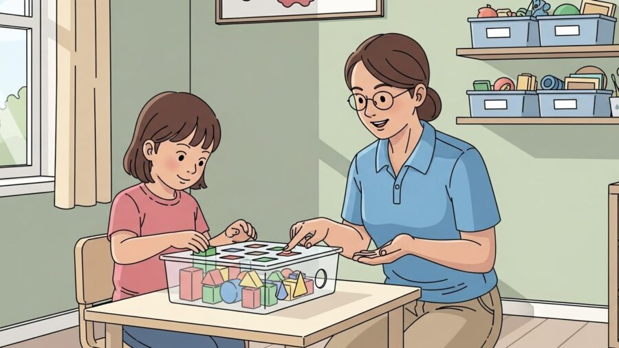

Terapias e Abordagens
Terapias e Abordagens
9 de janeiro de 2026

Aterapia ocupacional para crianças com TEA em Porto Alegre é uma das intervenções mais completas e transformadoras dentro do cuidado ao desenvolvimento infantil. Quando bem estruturada, baseada em evidências científicas e aplicada por profissionais especializados, ela atua diretamente na funcionalidade, na autorregulação, na autonomia e na participação social da criança, respeitando suas singularidades e potencialidades.

Na região do bairro Moinhos de Vento, um dos principais polos de saúde e bem-estar da capital gaúcha, a HD 360 Moinhos se consolida como referência em terapia ocupacional infantil, oferecendo um atendimento integrado, humanizado e profundamente alinhado às necessidades reais das crianças com TEA e de suas famílias.
Este artigo foi desenvolvido para explicar, com máxima riqueza de detalhes, como funciona a terapia ocupacional no contexto do TEA, como ela ajuda no desenvolvimento infantil, quais são seus benefícios práticos, por que a intervenção precoce é tão importante e como a atuação especializada em Porto Alegre, especialmente no Moinhos de Vento, faz diferença nos resultados.
O Transtorno do Espectro Autista (TEA) é uma condição do neurodesenvolvimento que impacta a forma como a criança percebe o mundo, processa informações, se comunica, interage socialmente e responde aos estímulos do ambiente. Cada criança apresenta um perfil único, com diferentes níveis de habilidades, desafios e necessidades de apoio.
Entre as áreas que podem ser impactadas no TEA infantil, destacam-se:
É exatamente nesse ponto que a terapia ocupacional em Porto Alegre se torna essencial: ela não atua apenas sobre sintomas isolados, mas sobre a funcionalidade da criança na vida real, em casa, na escola e nos ambientes sociais.
A terapia ocupacional é uma área da saúde que tem como objetivo ajudar a pessoa a participar de forma ativa, funcional e independente das atividades do cotidiano. No caso das crianças com TEA, essas atividades envolvem brincar, aprender, se comunicar, se alimentar, se vestir, interagir e lidar com estímulos do ambiente.

Na prática, a terapia ocupacional:
Em Porto Alegre, especialmente em clínicas especializadas como a HD 360 Moinhos, essa atuação acontece de forma integrada com outras áreas, potencializando os ganhos terapêuticos.
Todo processo terapêutico eficaz começa com uma avaliação ocupacional completa. Na HD 360 Moinhos, essa etapa é conduzida com extrema atenção aos detalhes, pois cada informação é fundamental para construir um plano terapêutico assertivo.
A avaliação observa aspectos como:
Essa análise permite compreender como a criança funciona, e não apenas quais dificuldades ela apresenta. A partir disso, são definidos objetivos claros, funcionais e mensuráveis.
Um dos grandes diferenciais da terapia ocupacional para crianças com TEA em Porto Alegre é o trabalho com integração sensorial. Muitas crianças apresentam dificuldades em organizar estímulos como sons, movimentos, texturas, cheiros e estímulos visuais.
Quando o cérebro não consegue processar esses estímulos de forma eficiente, podem surgir:
Na HD 360 Moinhos, a integração sensorial é trabalhada de forma planejada e segura, utilizando:
O objetivo não é “eliminar” a sensibilidade, mas ajudar o sistema nervoso da criança a se organizar melhor, promovendo mais equilíbrio emocional e funcional.
As sessões de terapia ocupacional infantil são estruturadas para serem lúdicas, funcionais e altamente intencionais. Cada atividade tem um propósito terapêutico claro, mesmo quando parece apenas uma brincadeira.
Durante as sessões, a criança pode participar de:
Na HD 360 Moinhos, o ambiente é cuidadosamente planejado para oferecer previsibilidade, segurança e estímulos adequados, fatores fundamentais para o engajamento da criança.
Um dos principais objetivos da terapia ocupacional para crianças com TEA é promover autonomia funcional. Isso significa ajudar a criança a realizar, de forma progressivamente mais independente, atividades do cotidiano.
Entre elas:
Essas conquistas impactam diretamente a autoestima da criança e a dinâmica familiar, reduzindo níveis de estresse e ampliando a participação social.
A atuação da terapia ocupacional também reflete de forma significativa no contexto escolar. Crianças que recebem acompanhamento adequado tendem a apresentar:
Em Porto Alegre, a HD 360 Moinhos mantém uma comunicação próxima com as famílias e, quando necessário, contribui com orientações que favorecem a generalização das habilidades para a escola.
A terapia ocupacional não acontece apenas dentro da sala terapêutica. O envolvimento da família é parte essencial do processo. Orientações simples, quando bem direcionadas, podem potencializar os ganhos da criança no dia a dia.
A equipe da HD 360 Moinhos oferece:
Esse cuidado fortalece o vínculo entre família e clínica, criando um ambiente favorável ao desenvolvimento infantil.
Um dos grandes diferenciais da terapia ocupacional em Porto Alegre realizada na HD 360 Moinhos é a atuação integrada com outras áreas, como psicologia, fonoaudiologia e intervenções baseadas na ciência ABA.
Essa integração permite:
Todo o trabalho é fundamentado em evidências científicas, respeitando a individualidade de cada criança.
Ao buscar terapia ocupacional para crianças com TEA em Porto Alegre, a escolha da clínica faz toda a diferença. A HD 360 Moinhos, localizada no bairro Moinhos de Vento, se destaca por reunir:
Cada detalhe é pensado para oferecer segurança, qualidade e resultados reais.
A terapia ocupacional para crianças com TEA não é uma intervenção pontual, mas um processo contínuo de construção de habilidades, respeitando o tempo e a singularidade de cada criança.
Em Porto Alegre, especialmente na região do Moinhos de Vento, a HD 360 Moinhosrepresenta um espaço onde desenvolvimento, ciência e acolhimento caminham juntos, ajudando crianças a conquistarem mais autonomia, participação e qualidade de vida.
Leia também